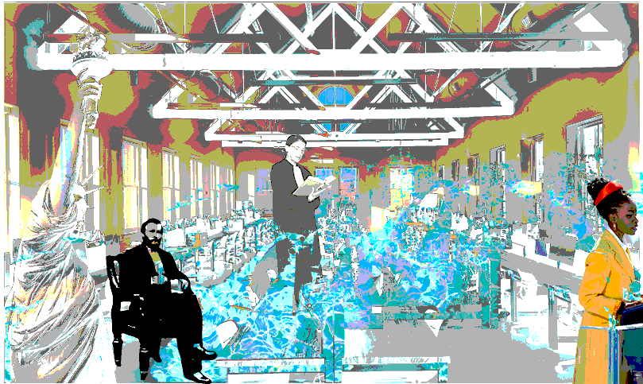

I am an artist healer, and my work explores themes of spirituality,
dreams, suffering, connection, ritual, empowerment, and love.
On this page, you can find a link to my Glitch and Grit Project
about how we fly in the night to the dream realm where we find support.
In this project, there is a link to Telling Dreams of the Departed,
my film which explores loss, longing, and connection of dreamers
and
those who have passed and returned through dreams, proposing that the
interconnection between both realms is fluid and alive.
